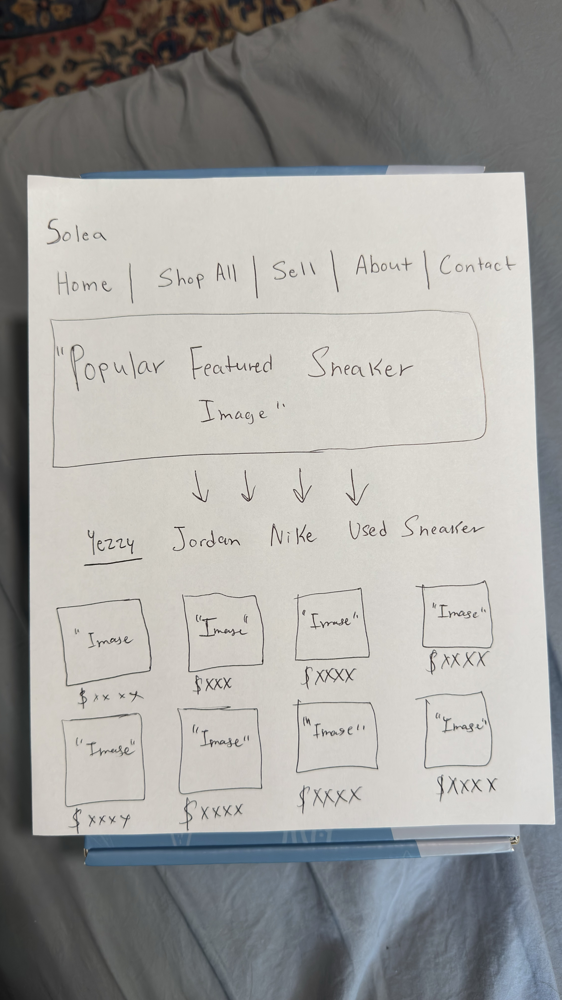

Project Information
Project Name: Solea
Audience: Sneaker enthusiasts, streetwear fans, sneaker collectors, and online shoppers interested in authentic high-demand sneakers.
Purpose: The purpose of Solea is to create a modern sneaker resale website that showcases premium sneaker collections, promotes sneaker culture, and allows users to explore and sell sneakers.
Personality: Modern, bold, luxury, minimalist, and streetwear-inspired.
Comparable Sites: Common Hype, StockX, and GOAT.
Features and Content: Responsive layouts, sneaker product grids, hover animations, interactive forms, collection pages, navigation systems, and modern product showcases.
Color Palette
| Name | Hex | RGB | Color Chip | Use |
|---|---|---|---|---|
| Black | #000000 | 0, 0, 0 | Headings, navigation, buttons | |
| Blue | #27ADF5 | 39, 173, 245 | Extra color | |
| Red | #ff0000 | 255, 0, 0 | Extra color | |
| Gray | #808080 | 128, 128, 128 | Secondary text | |
| Orange | #FFA500 | 255, 165, 0 | Highlights and accents | |
| Yellow | #FFFF00 | 255, 255, 0 | Attention-grabbing elements | |
| White | #FFFFFF | 255, 255, 255 | Backgrounds and text contrast |
Overall Site Styling
The Solea website uses three external CSS files: colors.css, layout.css, and effects.css.
The website uses the font family Inter, Helvetica, sans-serif because it creates a modern luxury appearance inspired by sneaker and fashion websites.
The website uses dark backgrounds, bold typography, large spacing, responsive layouts, and smooth hover animations to create a premium sneaker shopping experience.
The visual design is heavily inspired by Common Hype and other modern minimalist fashion websites.
Header Styling
The header section is positioned at the top of each page and contains the Solea branding and introductory text.
The tagline “Premium Sneaker Resale Marketplace” was added under the logo to show what the website is about in a clear and simple way.
The header uses large bold typography, centered alignment, and dark background colors to create a luxury streetwear appearance.
The header spacing and layout create a clean modern visual hierarchy.
Navigation Styling
The navigation section is positioned directly below the header and uses flexbox layouts to organize links horizontally.
Navigation links use uppercase typography, spacing between links, and hover transitions to improve interaction and usability.
The navigation hover effects smoothly transition colors when users interact with menu items.
Main Content Styling
The main section uses responsive grid layouts and flexbox layouts to organize sneaker products, collections, and content areas.
Product cards use rounded corners, hover animations, scaling image effects, and spacing to improve product presentation.
Large hero typography and oversized spacing are used throughout the site to create a modern fashion-inspired layout.
Forms and buttons use modern styling with transitions and hover animations for better user interaction.
Interactive Effects Styling
The effects.css file controls animations, transitions, hover effects, and interactive design elements.
Navigation links transition colors smoothly when hovered.
Product cards slightly move upward using the CSS transform property:
transform: translateY(-10px);
Product images scale slightly larger when hovered using:
transform: scale(1.03);
Buttons also use hover scaling animations and background color transitions.
Footer Styling
The footer uses a dark background color with centered text and consistent spacing.
The footer maintains the same typography and minimalist design used throughout the rest of the website.
Layout Sketch
Below is the digital wireframe and layout structure used during the development process of the Solea website.

Graphic / Image Licensing
| File | Use | License |
|---|---|---|
| images/logo.png | Solea brand logo | Self Created Image |
| images/mocha.jpg | Homepage featured sneaker | Self Created By The Website Owner |
| images/foam.jpg | Homepage featured sneaker | Self Created By The Website Owner |
| images/slides.jpg | Homepage featured sneaker | Self Created By The Website Owner |
| images/frag.jpg | Homepage featured sneaker | Self Created By The Website Owner |
| images/newbalance.jpg | Homepage featured sneaker | Self Created By The Website Owner |
| images/newbalance2.jpg | Homepage featured sneaker | Self Created By The Website Owner |
| images/offwhite.jpg | Homepage featured sneaker | Self Created By The Website Owner |
| images/olive.jpg | Homepage featured sneaker | Self Created By The Website Owner |
| images/phantom.jpg | Homepage featured sneaker | Self Created By The Website Owner |
| images/store.jpg | Homepage featured sneaker | Copyright Free |
| images/drawing.jpeg | Website wireframe sketch | Created by site author for this project. |
All sneaker logos, sneaker photos, and related brand imagery remain the property of their respective copyright owners.
Responsive Web Design
The Solea website uses responsive design techniques including CSS Grid, Flexbox, scalable typography, and responsive image sizing.
Images use:
max-width: 100%; and height: auto;
This allows the website to resize correctly across desktop, tablet, and mobile devices.
QAA Improvements
Mobile Responsiveness
Additional media queries were added to the layout.css file to improve the website's appearance on mobile devices and tablets. The header, navigation menu, hero section, and product grids now adjust automatically to fit smaller screens.
This change improves the user experience by making content easier to read and navigate on all devices.
Navigation Usability
Hover and focus effects were added to navigation links through the effect.css file. Users now receive visual feedback when interacting with menu items, and keyboard users can more easily identify selected links.
This improvement makes navigation more accessible and easier to use for all visitors.
Image Accessibility
Descriptive alt text was added to images throughout the website, including sneaker photos, logos, and layout sketches.
This change improves accessibility for users who rely on screen readers and provides descriptions when images fail to load.